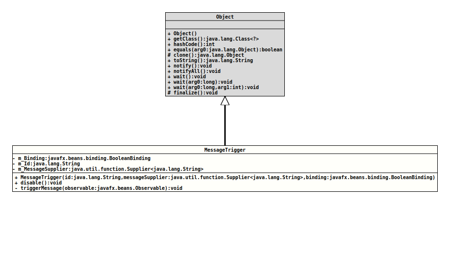

Module org.tquadrat.foundation.fx
Class ErrorDisplay.MessageTrigger
java.lang.Object
org.tquadrat.foundation.fx.control.ErrorDisplay.MessageTrigger
- Enclosing class:
ErrorDisplay
@ClassVersion(sourceVersion="$Id: ErrorDisplay.java 1112 2024-03-10 14:16:51Z tquadrat $")
@API(status=INTERNAL,
since="0.4.3")
private final class ErrorDisplay.MessageTrigger
extends Object
Wraps a
BooleanBinding
with a message.
Each time the binding invalidates, it will be verified again and the error message will be added or removed from the error display.
- Author:
- Thomas Thrien (thomas.thrien@tquadrat.org)
- Version:
- $Id: ErrorDisplay.java 1112 2024-03-10 14:16:51Z tquadrat $
- Since:
- 0.4.3
- UML Diagram
-

UML Diagram for "org.tquadrat.foundation.fx.control.ErrorDisplay.MessageTrigger"
{kind=link}
-
Field Summary
FieldsModifier and TypeFieldDescriptionprivate final BooleanBindingThe binding.private final StringThe message id.The supplier for the message text. -
Constructor Summary
ConstructorsConstructorDescriptionMessageTrigger(String id, Supplier<String> messageSupplier, BooleanBinding binding) Creates a new instance ofMessageTrigger. -
Method Summary
Modifier and TypeMethodDescriptionfinal voiddisable()Disables this message trigger in preparation of its disposal.private final voidtriggerMessage(Observable observable) The invalidation listener that updates the error display.
-
Field Details
-
m_Binding
The binding. -
m_Id
The message id. -
m_MessageSupplier
The supplier for the message text.
-
-
Constructor Details
-
MessageTrigger
Creates a new instance of
MessageTrigger.The message will be displayed when the given instance of
BooleanBindingevaluates totrue.- Parameters:
id- The message id.messageSupplier- The supplier for the message text.binding- The binding that controls the appearance of the message.
-
-
Method Details
-
disable
Disables this message trigger in preparation of its disposal. -
triggerMessage
The invalidation listener that updates the error display.- Parameters:
observable- The observable that became invalid.
-